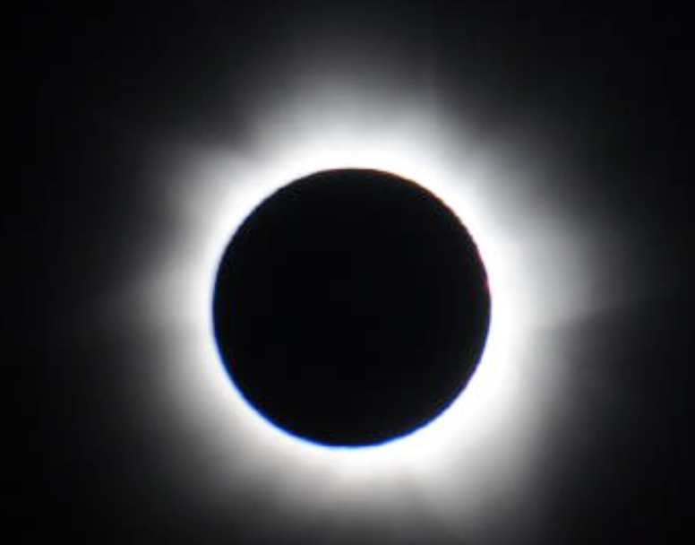
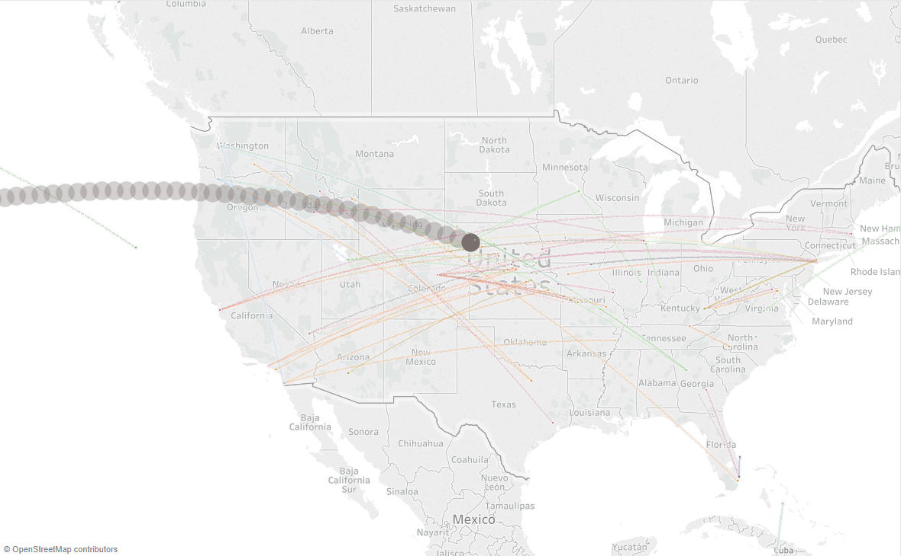

The Great American Eclipse is less than a week away.
The hype for this particular event is partly due to the large swath of places (mostly across the United States) where one may witness the so called ‘totality.’ This is when the moon covers the entire sun, producing the ‘total’ eclipse.
During totality, the sun is completely covered, and it gets as dark as night. And you can actually see the corona surrounding the sun as in the image above. I hear it’s a spectacular sight.
One of the challenges, though, in trying to fully experience totality is the weather. According to weather.com, those of us on the east coast may be out of luck.
But there is one way to beat the weather — to be above it. There are tens of thousands of flights each day. So naturally, you might wonder if you can experience totality on some of these flights.
Well, I wondered too. So, I decided to find out.
TL;DR
I managed to identify 77 flights — each having a decent chance (I think) to experience totality. Scroll to the end for the list.
The process of elimination
Since I did this primarily to satisfy my curiosity, I decided to set my budget to $0.00. I ended up going over that a little bit, since I needed a decent EC2 instance on AWS to do some of the calculations. But I think the final cost will be below that of a latte.
Most of the work was done via Jupyter notebooks. The primary Python package used was pandas. I also used python_spheric for doing some of the spherical trigonometric calculations.
How many flight paths are there?
There is a public database of flight routes from OpenFlights. After a little massaging, this resulted in total of 19,257 pairs of airports, each denoting a pair of existing direct flight connections between those two airports.
How many flight paths cross the path of totality?
You can download the path of totality information through this remarkable tool by Xavier Jubier. You can download in XML format (which I then converted to JSON, and then to pandas DataFrame.)
The path of totality can be thought of as the outline of the shadow of the moon moving across the earth surface. You can approximate it, for the most part, as a circle of about 50 miles in radius, traveling at about 1,500 miles per hour. (A map of the path, with timings, can be found here.)
Presuming that the flight path follows the geodesic (shortest distance between two points on a sphere), one can then calculate how many of the flight paths actually cross the path of totality. The answer: 3,954.
How many flights are scheduled to be in the air during the eclipse?
OK, turns out that OpenFlights folks do not today have the scheduled flights on their website (though they are considering it.) This is a bit of a blocker…
I ended up subscribing to FlightStats developer plan to download the scheduled flights for the day of the eclipse. I’m presuming they would be fine with my using this data for a good cause. (It’s “free marketing” for them, right?)
Using the actual schedules, one can then figure out the actual flights that are in the air during the duration of the eclipse (i.e., the shadow of the moon passing over the surface of the earth.) The answer: 4,408.
Note, we are assuming that the flights are arriving on time for this result. If we allowed for flights to arrive (as they sometimes do) several hours late, the count would be much higher.
(In case you’re wondering why this number is larger than the above number, 3954, that’s because there are multiple flights for each flight path, flying in both directions.)
How many flights are expected to cross the path of totality at the right time?
This, of course, is the hardest part to estimate. For each flight, we need to figure out when it will cross the path of totality, and see how close that is to the time that the moon’s shadow is there.
What we’ll do is to figure out when a flight will cross the path of totality under “good conditions”, and estimate how delayed (how much later) a flight can be and still be under the path of totality.
Here are the assumptions that comprise “good conditions” — combining various readings on the Internet, and my personal experience:
- Flight departs on time.
- Flight taxis for 12 minutes.
- Flight takes 10 minutes to reach cruising altitude.
- Flight lands 15 minutes before the scheduled arrival time.
We then calculate those flights with at least a 10 minute window (margin of safety) in being able to catch totality. The largest margin of safety is about 30 minutes. This resulted in the 77 flights listed at the end of this article.
Here’s a rough visualization of the 77 flights and the moon’s shadow at 1:52 pm EDT:

Some notes
I spent a good deal of time validating the results, and it appears that the weakest assumption is that the flight path follows the geodesic.
This makes sense, as actual flight paths depend on factors such as the weather (e.g., thunderstorms), and taking consideration of jet streams. I see, for example, the JFK to Honolulu flight path historically appears to be significantly north of the geodesic. (You can check historic flight paths here. And this tool appears to use geodesics to project a flight path.)
The impact is that in general, longer the flight, more likely the flight path will be off from the geodesic, and thus miss the eclipse. In fact, of the 77 flights, the one that probably has the best chance is #9 (from Chadron to Denver.)
Also of interest is that for many of these flights, you may not be able to look at the sun due to the orientation of the airplane. (Even if you’re sitting on the right side.) A tool like this can be useful to figure out if the sun is in the right position to be visible from the plane.
Finally, I’d like to mention that Southwest Airlines has tweeted about being able to catch the Total Eclipse on five of their flights:
Unfortunately, I can only confirm one of these flights. Looking at the video, though, I see that many of these flights may not fall under the criterion I used in selecting the 77. Also curious is how the flight 1368 seems to bend southward in the video. The geodesic would actually bend the other way. Of course, it’s entirely possible that they are creating flight paths on that day to make sure that these do catch the total eclipse…
If I were doing this “for real”…
If money and time were less limited, the more proper way to do this is to look at the actual historical flight paths for each of the 4,408 flights scheduled to be in the air during the eclipse. We can then make an estimation of the ‘likelihood’ that each flight would see the eclipse, based on the historical patterns.
And ideally, the full effort would involve consideration of the actual airplane’s direction, the angle of view from the window, as well as the actual altitude of the flight (which will impact the location of the moon’s shadow as well).
The 77 Flights
Note the list is hardly exhaustive. There are many other flights that, depending on the actual flight path and schedule changes, will end up in totality. Nor is this list a guarantee (obviously.)
And of course, please take proper precautions if you’re going to look at, or record the eclipse!
- From ATL(Atlanta) To PDX(Portland), Flight DL-2565 (Delta Air Lines), departing at 08/21 09:45:00
- From ATL(Atlanta) To SEA(Seattle), Flight DL-1336 (Delta Air Lines), departing at 08/21 10:55:00
- From ATL(Atlanta) To SEA(Seattle), Flight DL-39 (Delta Air Lines), departing at 08/21 12:25:00
- From ATL(Atlanta) To TYS(Knoxville), Flight DL-517 (Delta Air Lines), departing at 08/21 13:47:00
- From BNA(Nashville) To CHS(Charleston), Flight WN-1559 (Southwest Airlines), departing at 08/21 12:50:00
- From BOI(Boise) To PDX(Portland), Flight AS-2510 (Alaska Airlines), departing at 08/21 10:35:00
- From BOS(Boston) To DEN(Denver), Flight UA-652 (United Airlines), departing at 08/21 10:31:00
- From BOS(Boston) To SFO(San Francisco), Flight UA-1749 (United Airlines), departing at 08/21 09:35:00
- From CDR(Chadron) To DEN(Denver), Flight BAI-702 (Boutique Air), departing at 08/21 11:10:00
- From CLT(Charlotte) To STL(Saint Louis), Flight AA-1769 (American Airlines), departing at 08/21 13:00:00
- From DCA(Washington) To DFW(Dallas), Flight AA-1602 (American Airlines), departing at 08/21 12:50:00
- From DEN(Denver) To BNA(Nashville), Flight WN-301 (Southwest Airlines), departing at 08/21 10:20:00
- From DEN(Denver) To CLT(Charlotte), Flight AA-688 (American Airlines), departing at 08/21 09:50:00
- From DEN(Denver) To CLT(Charlotte), Flight UA-1711 (United Airlines), departing at 08/21 10:15:00
- From DEN(Denver) To CVG(Cincinnati), Flight DL-936 (Delta Air Lines), departing at 08/21 10:32:00
- From DEN(Denver) To IAD(Dulles), Flight WN-724 (Southwest Airlines), departing at 08/21 10:50:00
- From DEN(Denver) To IAD(Dulles), Flight UA-1192 (United Airlines), departing at 08/21 10:55:00
- From DEN(Denver) To MKE(Milwaukee), Flight UA-445 (United Airlines), departing at 08/21 10:59:00
- From DEN(Denver) To PIT(Pittsburgh), Flight WN-1866 (Southwest Airlines), departing at 08/21 11:00:00
- From DEN(Denver) To TYS(Knoxville), Flight UA-4751 (United Airlines), departing at 08/21 10:10:00
- From DEN(Denver) To TYS(Knoxville), Flight F9–588 (Frontier Airlines), departing at 08/21 10:10:00
- From DFW(Dallas) To PDX(Portland), Flight AA-1580 (American Airlines), departing at 08/21 09:05:00
- From DFW(Dallas) To SEA(Seattle), Flight AA-1402 (American Airlines), departing at 08/21 08:55:00
- From EWR(Newark) To DEN(Denver), Flight UA-1262 (United Airlines), departing at 08/21 10:26:00
- From EWR(Newark) To LAS(Las Vegas), Flight UA-1179 (United Airlines), departing at 08/21 10:44:00
- From FCO(Rome) To ATL(Atlanta), Flight DL-63 (Delta Air Lines), departing at 08/21 09:45:00
- From FLL(Fort Lauderdale) To ORD(Chicago), Flight UA-1290 (United Airlines), departing at 08/21 12:27:00
- From FLL(Fort Lauderdale) To YYZ(Toronto), Flight AC-1623 (Air Canada), departing at 08/21 13:20:00
- From GYE(Guayaquil) To JFK(New York), Flight XL-1438 (LATAM Airlines Ecuador), departing at 08/21 08:40:00
- From HKG(Hong Kong) To SFO(San Francisco), Flight CX-870 (Cathay Pacific), departing at 08/21 14:15:00
- From IAD(Dulles) To DFW(Dallas), Flight UA-6018 (United Airlines), departing at 08/21 12:45:00
- From IAH(Houston) To YVR(Vancouver), Flight UA-600 (United Airlines), departing at 08/21 09:13:00
- From JFK(New York) To HNL(Honolulu), Flight HA-51 (Hawaiian Airlines), departing at 08/21 10:00:00
- From JFK(New York) To LAS(Las Vegas), Flight B6–411 (JetBlue Airways), departing at 08/21 11:20:00
- From JFK(New York) To LAX(Los Angeles), Flight AA-163 (American Airlines), departing at 08/21 11:00:00
- From JFK(New York) To LAX(Los Angeles), Flight VX-409 (Virgin America), departing at 08/21 11:30:00
- From JFK(New York) To SFO(San Francisco), Flight DL-490 (Delta Air Lines), departing at 08/21 09:45:00
- From LAS(Las Vegas) To IND(Indianapolis), Flight WN-1942 (Southwest Airlines), departing at 08/21 08:30:00
- From LAS(Las Vegas) To ORD(Chicago), Flight NK-446 (Spirit Airlines), departing at 08/21 08:31:00
- From LAX(Los Angeles) To BOS(Boston), Flight VX-360 (Virgin America), departing at 08/21 08:03:00
- From LAX(Los Angeles) To JFK(New York), Flight AA-82 (American Airlines), departing at 08/21 08:00:00
- From LAX(Los Angeles) To ORD(Chicago), Flight AA-362 (American Airlines), departing at 08/21 08:00:00
- From LGA(New York) To BNA(Nashville), Flight DL-4175 (Delta Air Lines), departing at 08/21 11:59:00
- From LGA(New York) To BNA(Nashville), Flight AA-4774 (American Airlines), departing at 08/21 12:00:00
- From LGA(New York) To DEN(Denver), Flight UA-1135 (United Airlines), departing at 08/21 10:30:00
- From MCO(Orlando) To MSP(Minneapolis), Flight SY-342 (Sun Country Airlines), departing at 08/21 12:50:00
- From MDW(Chicago) To ATL(Atlanta), Flight DL-1648 (Delta Air Lines), departing at 08/21 12:00:00
- From MDW(Chicago) To SFO(San Francisco), Flight WN-267 (Southwest Airlines), departing at 08/21 11:25:00
- From MIA(Miami) To SEA(Seattle), Flight AA-2691 (American Airlines), departing at 08/21 08:40:00
- From MSP(Minneapolis) To JAX(Jacksonville), Flight DL-2786 (Delta Air Lines), departing at 08/21 11:30:00
- From MSP(Minneapolis) To LAS(Las Vegas), Flight DL-1439 (Delta Air Lines), departing at 08/21 11:15:00
- From MSP(Minneapolis) To SNA(Santa Ana), Flight DL-1377 (Delta Air Lines), departing at 08/21 11:30:00
- From OMA(Omaha) To LAS(Las Vegas), Flight WN-1882 (Southwest Airlines), departing at 08/21 12:00:00
- From ORD(Chicago) To BOI(Boise), Flight UA-5814 (United Airlines), departing at 08/21 09:00:00
- From ORD(Chicago) To SFO(San Francisco), Flight UA-499 (United Airlines), departing at 08/21 10:47:00
- From PDX(Portland) To ATL(Atlanta), Flight DL-2466 (Delta Air Lines), departing at 08/21 08:45:00
- From PDX(Portland) To MCI(Kansas City), Flight AS-3382 (Alaska Airlines), departing at 08/21 09:15:00
- From PHX(Phoenix) To ORD(Chicago), Flight F9–1308 (Frontier Airlines), departing at 08/21 08:25:00
- From RDU(Raleigh/Durham) To ATL(Atlanta), Flight DL-1803 (Delta Air Lines), departing at 08/21 13:25:00
- From SAN(San Diego) To CLT(Charlotte), Flight AA-2050 (American Airlines), departing at 08/21 07:15:00
- From SAN(San Diego) To JFK(New York), Flight AA-94 (American Airlines), departing at 08/21 07:45:00
- From SAN(San Diego) To SEA(Seattle), Flight AS-493 (Alaska Airlines), departing at 08/21 08:00:00
- From SEA(Seattle) To ATL(Atlanta), Flight AS-746 (Alaska Airlines), departing at 08/21 07:10:00
- From SEA(Seattle) To ATL(Atlanta), Flight DL-2864 (Delta Air Lines), departing at 08/21 07:45:00
- From SEA(Seattle) To FLL(Fort Lauderdale), Flight AS-38 (Alaska Airlines), departing at 08/21 08:55:00
- From SFO(San Francisco) To BOS(Boston), Flight UA-768 (United Airlines), departing at 08/21 08:30:00
- From SFO(San Francisco) To DCA(Washington), Flight VX-1 (Virgin America), departing at 08/21 08:00:00
- From SFO(San Francisco) To EWR(Newark), Flight UA-233 (United Airlines), departing at 08/21 08:10:00
- From SFO(San Francisco) To ORD(Chicago), Flight AA-150 (American Airlines), departing at 08/21 08:00:00
- From SFO(San Francisco) To PHL(Philadelphia), Flight AA-722 (American Airlines), departing at 08/21 08:00:00
- From SJU(San Juan) To PHL(Philadelphia), Flight AA-2049 (American Airlines), departing at 08/21 13:15:00
- From SLC(Salt Lake City) To CVG(Cincinnati), Flight DL-1833 (Delta Air Lines), departing at 08/21 09:45:00
- From SLC(Salt Lake City) To PDX(Portland), Flight AS-3499 (Alaska Airlines), departing at 08/21 10:04:00
- From SLC(Salt Lake City) To PHL(Philadelphia), Flight DL-194 (Delta Air Lines), departing at 08/21 10:10:00
- From SLC(Salt Lake City) To RDU(Raleigh/Durham), Flight DL-1846 (Delta Air Lines), departing at 08/21 10:05:00
- From SNA(Santa Ana) To ORD(Chicago), Flight AA-1205 (American Airlines), departing at 08/21 08:05:00
- From STL(Saint Louis) To DEN(Denver), Flight UA-4493 (United Airlines), departing at 08/21 11:55:00